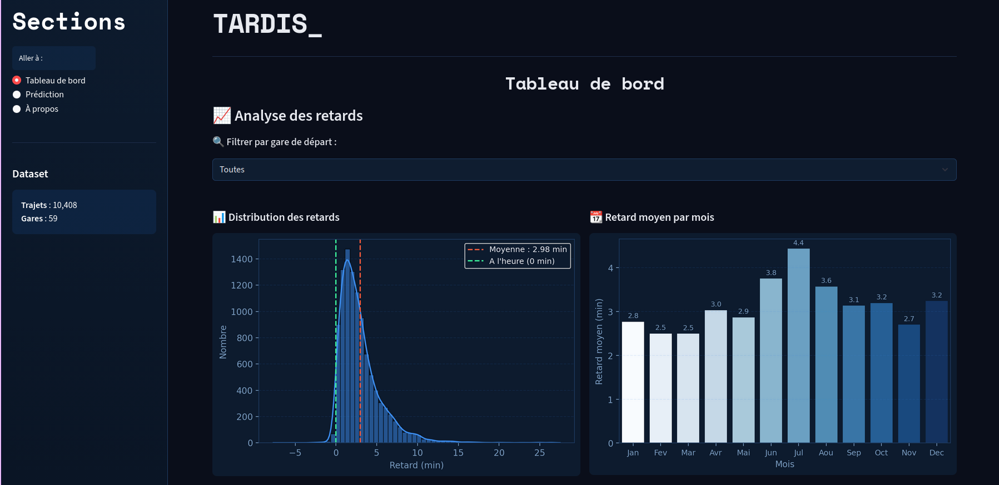
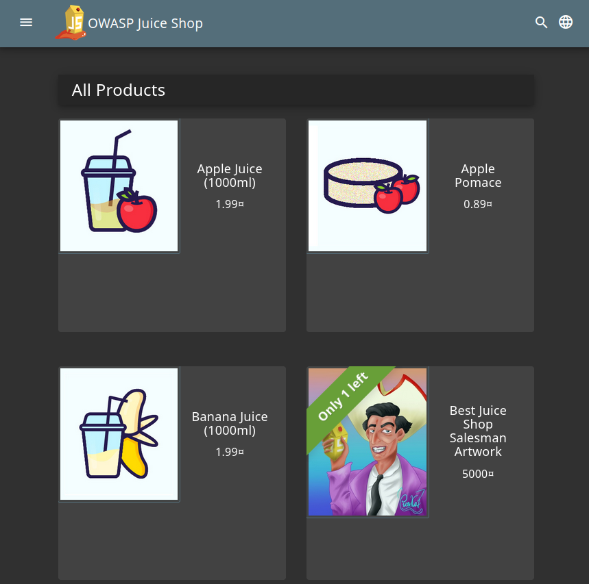
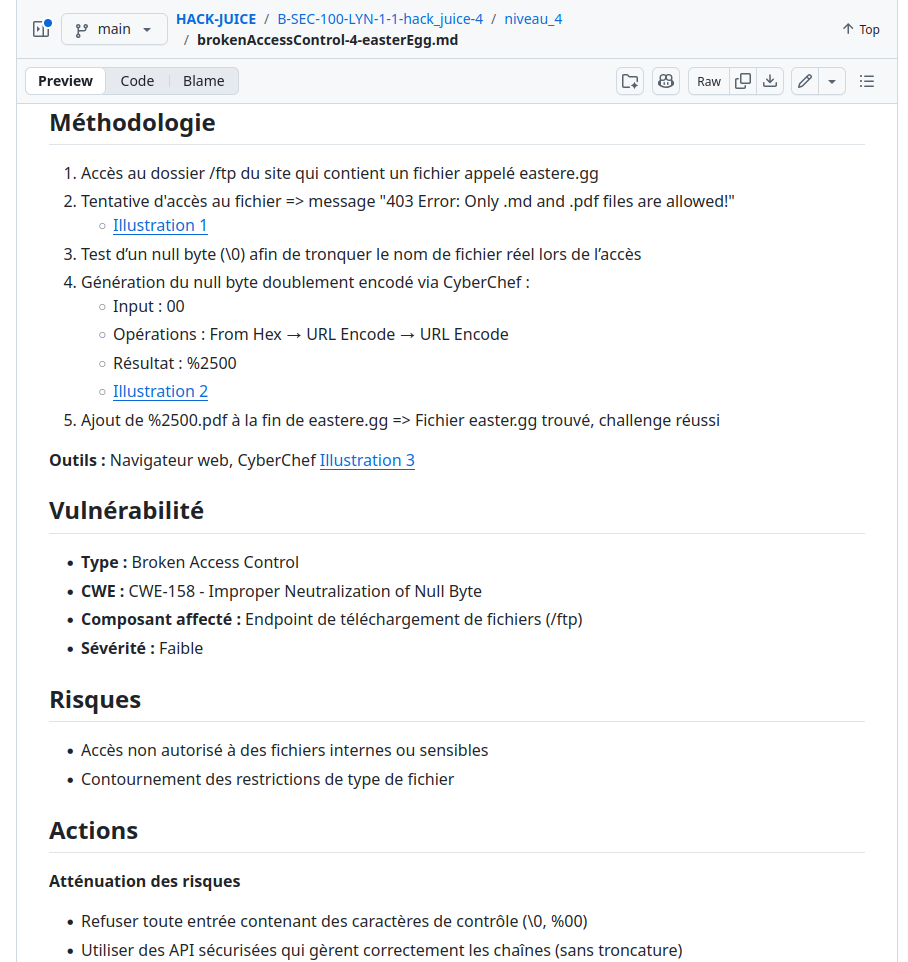

SkillSwap
Conception d'une application web d'échange de compétences : wireframes, mockups, prototypes interactifs et tests utilisateurs.
Voir sur GitHubCe que j'ai conçu, développé et appris
Conception d'une application web d'échange de compétences : wireframes, mockups, prototypes interactifs et tests utilisateurs.
Voir sur GitHubApplication web de gestion de tâches avec authentification utilisateur et base de données relationnelle.
Voir sur GitHubProjet Data/IA : data engineering et visualisation, machine learning et développement d'un dashboard interactif.
Voir sur GitHub
CTF (Capture The Flag) de cybersécurité sur le OWASP Juice Shop : identification et exploitation de vulnérabilités web pour sensibiliser aux bonnes pratiques de sécurité.
Voir sur GitHub
